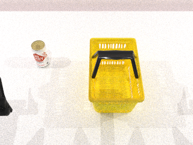
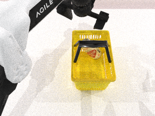
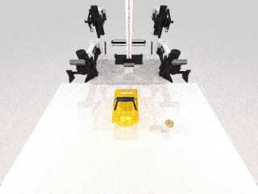
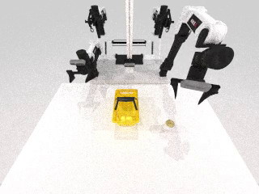
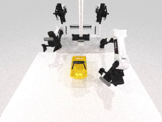
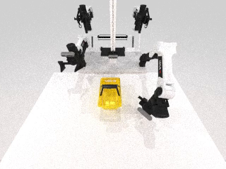
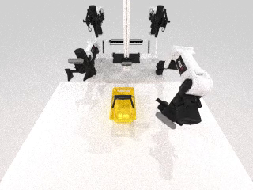
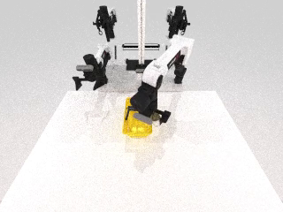
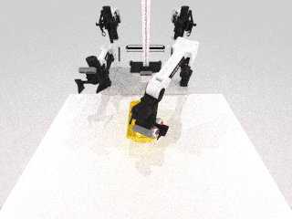
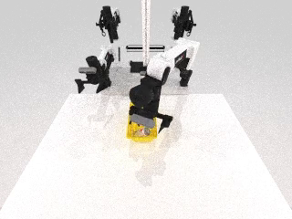

Executive verdict
现在真正完成了什么
纯文本输入编译到 RoboTwin 现有资产、布局、任务程序、真实 rollout 和 success verifier。
真实视频解码、全时间轴采样、带置信度约束融合，并重新运行 RoboTwin rollout。
GitHub 自主发现、下载、哈希、归一化、碰撞代理、材质与多后端格式编译。
原生 SAPIEN 场景输入迁移到 MuJoCo 与 Isaac Sim，刚体公共子集达到 L3。
| Dashboard TODO | 当前状态 | 已有证据 | 缺口 |
|---|---|---|---|
| Text2Env Stage 0–1 / 2–4 | active | can/basket 现有资产、确定性包、RoboTwin 语义 rollout | 严格双语 catalog/golden、100 seeds、完整 SAPIEN 可见性与重放门 |
| Anchor2Env | active | 视频 613 帧输入、8 帧采样、609 帧输出、typed uncertainty | 至少 3 个场景、still-image full runtime、text-vs-anchor ablation、failure gallery |
| Asset Web Agent | active | 1 个自主发现资产、20 candidates、OBJ→USD/MJCF/URDF/SAPIEN/MetaSim | 3 个官方来源、10 个异构资产、关节资产、source-vs-import previews |
| Open-X-Sim | active | SAPIEN→MuJoCo/Isaac L3，MetaSim 官方 config 构造 | 3 场景中的 articulated 与 camera-sensitive、controller/policy transfer、L4 |
Shared architecture
不是四套独立管线
[INFERRED][HIGH] 第 2 项是第 1 项的多模态约束扩展，第 3 项是共享资产基础设施，第 4 项是统一环境包的编译和验证层。所有入口最终生成同一 `EnvironmentPackage`。
Image / video
Existing simulator env
Asset provenance
Source adapter
AssetBundle
TaskSpec
SAPIEN / MuJoCo
Isaac / MetaSim
ConformanceReport
Hashes + blockers
核心类型
`EnvSpec` 管世界、机器人、传感器和随机化；`AssetBundle` 管视觉/碰撞/关节/多格式与来源；`TaskSpec` 管动作、观测与成功条件；`AnchorSpec` 管观测约束与不确定性。
验收级别
L0 可导入；L1 结构与初态；L2 reset/action/observation/success；L3 轨迹状态与接触误差；L4 同一策略的统计行为。缺证据不会自动晋级。
Workflow 1
Pure Text2Env
[KNOWN][HIGH] 输入 “Place the cola can into the basket.” 后，系统只使用文本和 RoboTwin 现有资产，选中 `071_can/base0` 与 `110_basket/base1`，输出 package、placement、task program，并执行真实 RoboTwin primitive plan。


Verifier result
[KNOWN][HIGH] `near` 与真实 SAPIEN contact pair `basket / cola_can` 均通过；action interface 与 success evaluator 都绑定到 package/task hashes。
Claim boundary
[KNOWN][HIGH] 这是 RoboTwin 单后端的语义运行证据，不是跨引擎 L3，也不是 learned policy 或 L4 统计评估。
package digest
dc02ac61d744d1c559cd8222a83f91602979172a28d7e145af4bb5d5dde3e47b
Workflow 2
Image / Video Anchor2Env
[KNOWN][HIGH] Anchor 管线对 613 帧输入视频进行 ffprobe 验证和均匀时间采样，抽取 8 个真实帧；用户/VLM annotations 写入 object、camera、appearance、motion 和 uncertainty 约束，再与文本任务融合。








Typed uncertainty
`metric_positions_are_seed_specific`, `unobserved_geometry_unknown`, `appearance_labels_are_user_or_vlm_annotations`, `absolute_scale_unknown`。Anchor 是约束，不冒充完整 3D ground truth。
Workflow 3
AssetScout + AssetCompiler
[KNOWN][HIGH] 本次运行没有预先给 owner/repo。Agent 先搜索仓库，再在树中检索资产，从 20 个候选中选择 `google-deepmind/mujoco_menagerie/.../dex_cube.obj`，下载并记录来源、哈希和原始 license API 返回值。
Discovery
Provider
GitHub repository discovery
Candidates
20
Selected source
MuJoCo Menagerie / dex_cube.obj
Normalization
Source extent
2 × 2 × 2
Normalized extent
1 × 1 × 1 m
Generated
default material + AABB collision proxy
Outputs
Normalized OBJ
collision OBJ
USDA
MJCF
URDF
SAPIEN manifest
MetaSim object config
| Runtime/import surface | Result | Boundary |
|---|---|---|
| MuJoCo | 20-step pass | normalized mesh settles; final z ≈ 0.04399 m |
| SAPIEN | 20-step pass | normalized mesh settles; final z ≈ 0.04999 m |
| Isaac Sim | import smoke | USDA static reference loads; dynamic collision parity not claimed |
| MetaSim | config pass | official object/config construction; no runtime simulator selected |
Search and provenance
Compiled asset
Workflow 4
Open-X-Sim Transfer
[KNOWN][HIGH] 原生 SAPIEN JSON 场景被安全解析成 `EnvironmentPackage`，不执行来源 Python，也不依赖 compile sidecar。相同 rigid settle package 编译到 MuJoCo 与 Isaac Sim，比较 21 个状态点和接触序列。
| Target | Highest level | Evidence | Not claimed |
|---|---|---|---|
| MuJoCo | L3 | L0–L3 pass, 21 points, 0.001 m tolerance | L4 policy statistics |
| Isaac Sim | L3 | L0–L3 pass, 21 points, 0.001 m tolerance | articulation/controller/camera equivalence |
| MetaSim | official config | `ScenarioCfg` + `PrimitiveCubeCfg` constructed | runtime backend execution |
SAPIEN source proof
MJCF source proof
Verification
测试、源码与原始资产
Automated tests
[COMPUTED][HIGH] 本机定向测试 42/42；RTX 5090 远端定向测试 36/36。最终重跑日志与 manifest 位于本目录根部。
PYTEST_DISABLE_PLUGIN_AUTOLOAD=1 PYTHONPATH=source/agenticsim \ /Users/boris/miniconda3/bin/python -m pytest -q \ tests/test_placement_agent.py \ tests/test_openxsim_anchors.py \ tests/test_openxsim_assets.py \ tests/test_openxsim_conformance_pipeline.py \ tests/test_openxsim_ir_backends.py
Acceptance backlog
下一步不是重复做 V1
| 优先级 | 工作 | 完成门 |
|---|---|---|
| P0 | 补齐 Text2Env strict bilingual Stage 0–4 | 真实 catalog、goldens、100 seeds、可见性、resolved-only replay |
| P0 | Anchor2Env 扩到 3 个场景 | 至少 1 image + 1 video full runtime，ablation 与 failure gallery |
| P0 | AssetScout 扩到 3 sources / 10 assets | 异构格式、关节资产、settle/render/collision QA、typed decisions |
| P1 | Open-X-Sim 加 articulated + camera-sensitive | 控制/观测/相机误差与 loss records；不把文件加载当等价 |
| P2 | L4 policy transfer | 固定策略、多 seed、统计成功率和回归区间 |